Hc2(T) data for a Tc = 1.5 K
C4KHg are shown in Figs. 5 and 6. The data were
taken with the applied field both parallel (Fig. 5) and
perpendicular (Fig. 6) to the c-axis of the graphene planes.
Two fits are plotted along with each set of data. With the
 data are plotted a linear and a quadratic fit.
If the hypothesis discussed in the previous section about
type I superconductivity for 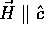 is correct, then the
data are plotted a linear and a quadratic fit.
If the hypothesis discussed in the previous section about
type I superconductivity for 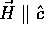 is correct, then the
 data should be approximately quadratic rather
than linear. The residuals 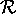 were calculated using Eq.
2, only now with the error of the ith data
point, sigmai, estimated to be 10% of the
experimentally measured critical field. The linear
temperature dependence gives a lower residual than the
quadratic fit, but the difference between the two residuals
is not statistically significant.
data should be approximately quadratic rather
than linear. The residuals 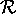 were calculated using Eq.
2, only now with the error of the ith data
point, sigmai, estimated to be 10% of the
experimentally measured critical field. The linear
temperature dependence gives a lower residual than the
quadratic fit, but the difference between the two residuals
is not statistically significant.
Another check on the  fits is to look at the
magnitude of Tc obtained from the extrapolation of
Hc2 to zero. As expected, the Tc
obtained from extrapolation of the
fits is to look at the
magnitude of Tc obtained from the extrapolation of
Hc2 to zero. As expected, the Tc
obtained from extrapolation of the  linear fits
usually agrees well with the Tc value measured in
zero-field temperature sweeps. In contrast, extrapolation of
the
linear fits
usually agrees well with the Tc value measured in
zero-field temperature sweeps. In contrast, extrapolation of
the  linear fits to Hc2 = 0 consistently
gives 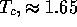 K for specimens whose Tc was 1.5 K
according to zero-field temperature sweeps.[10] On the other hand,
extrapolation of the quadratic fits to 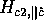 = 0
always results in Tc about 1.5 K, in agreement
with the zero-field sweeps. At this point the functional form
of
linear fits to Hc2 = 0 consistently
gives 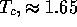 K for specimens whose Tc was 1.5 K
according to zero-field temperature sweeps.[10] On the other hand,
extrapolation of the quadratic fits to 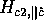 = 0
always results in Tc about 1.5 K, in agreement
with the zero-field sweeps. At this point the functional form
of  remains unresolved.
remains unresolved.
In Fig. 7, one of the fits is a simple straight line, while the other is calculated from the Helfand-Werthamer (HW) equation, which describes the temperature dependence of the upper critical field of a typical type II superconductor.[26,47] For the Tc = 1.5 K samples, the residuals for the linear fit are consistently at least a factor of 2 lower than those for the Helfand-Werthamer fit. Thus we conclude that Hc2(T) for the Tc = 1.5 K pink C4KHg samples exhibits extended linearity. The question of extended linearity cannot be decided for the lower-Tc mixed-phase samples because their data (not shown) extends over a smaller reduced temperature range due to the limitations imposed by the cryogenic apparatus.
The most convincing demonstration of the deviation of the Hc2(T) data above the typical type II superconductor curve is displayed in Fig. 8. By plotting the reduced field, 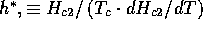 versus reduced temperature t (== T/ Tc), all the Hc2(T) data for 5 different C4KHg samples can be displayed together. The residual index for the linear fit is 3/4 that of the HW fit, indicative of about a 90% probability that the linear fit describes the data better.[6] Figure 8 also shows that at 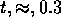 (the lowest accessible reduced temperature) the data have already reached 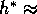 0.7, the zero-temperature value of h* calculated using the Helfand-Werthamer formalism.[26] Therefore, while it would be interesting to measure Hc2(t) to lower reduced temperatures and see larger deviations from the HW theory, the available data convincingly demonstrate a deviation from the HW functional form.
If the critical field is truly linear for both field orientations, then the anisotropy parameter epsilon should be a constant:
1/epsilon = dHc2, perp c/dT/dHc2, par c/dT
If epsilon is temperature-independent, the only
temperature-dependent quantity left in Eq. 1 should be
Hc2(0°). Therefore plots of
Hc2(theta) / Hc2(0)°
versus theta should lie directly on top of one
another, since all temperature dependence has presumably been
removed. A plot of Hc2(theta) /
Hc2(0)° is shown in Fig. 9 for a Tc
= 1.5 K C4KHg sample at three different reduced
temperatures. As the Figure shows, the curves for t = 0.76
and t = 0.55 do indeed lie on top of one another, implying a
nearly temperature-independent anisotropy in this temperature
range. However, the curve for t = 0.29 clearly lies above the
other two curves near theta = 90°, which
suggests a small increase in 1/epsilon at low
temperatures. A similar plot of the
Hc2(theta) data of Iye and Tanuma[30] on C8KHg shows
that epsilon is also temperature-dependent in the
stage 2 KHg-GIC.[9,10] This increase in
epsilon could be caused either by a slight upturn
from linearity in 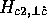 (positive curvature) or a slight
downturn from linearity in . Since 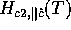 is
expected to be quadratic for type I behavior, the second
alternative seems more consistent with our experience with
the Hc2(theta) fits. It should be noted,
however, that strong positive curvature of  has been
observed by Iye and Tanuma[30] in C8RbHg.
has been
observed by Iye and Tanuma[30] in C8RbHg.